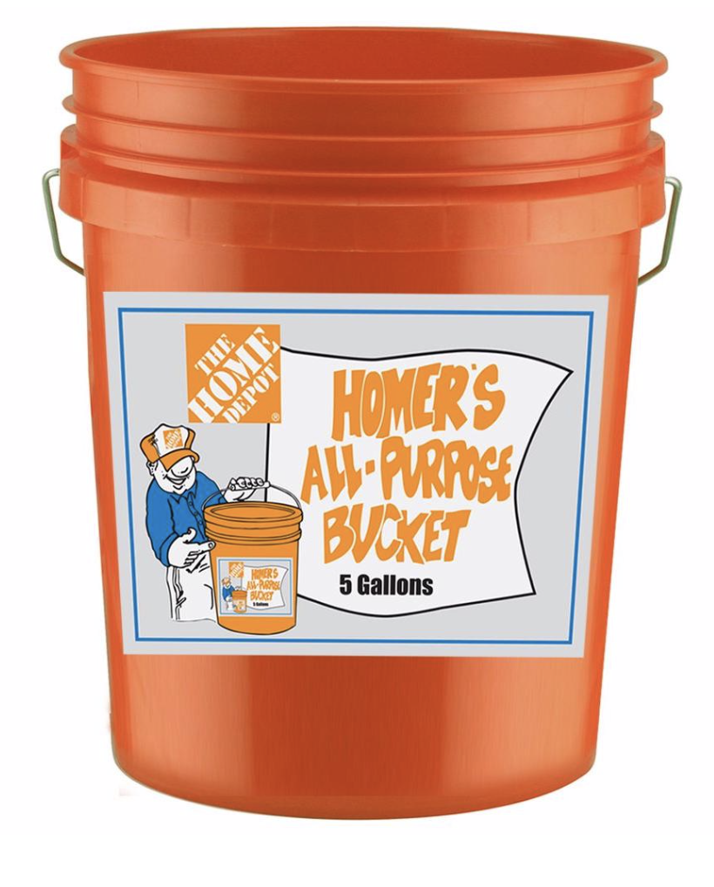
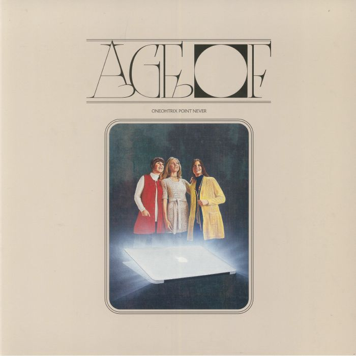
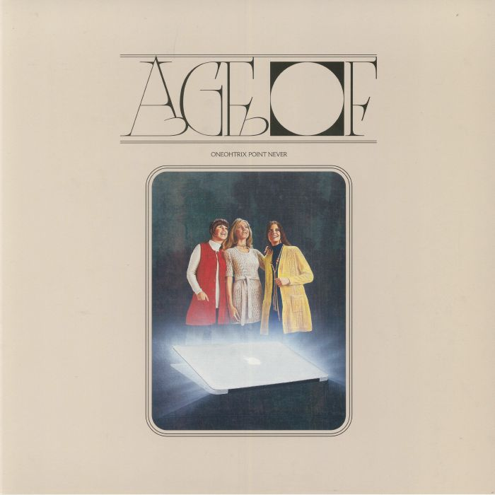
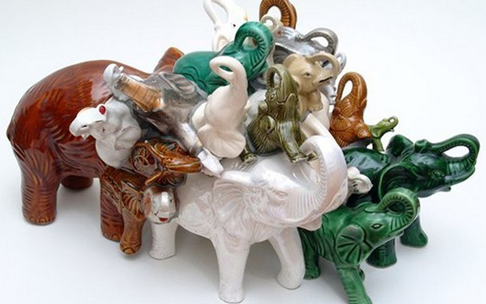
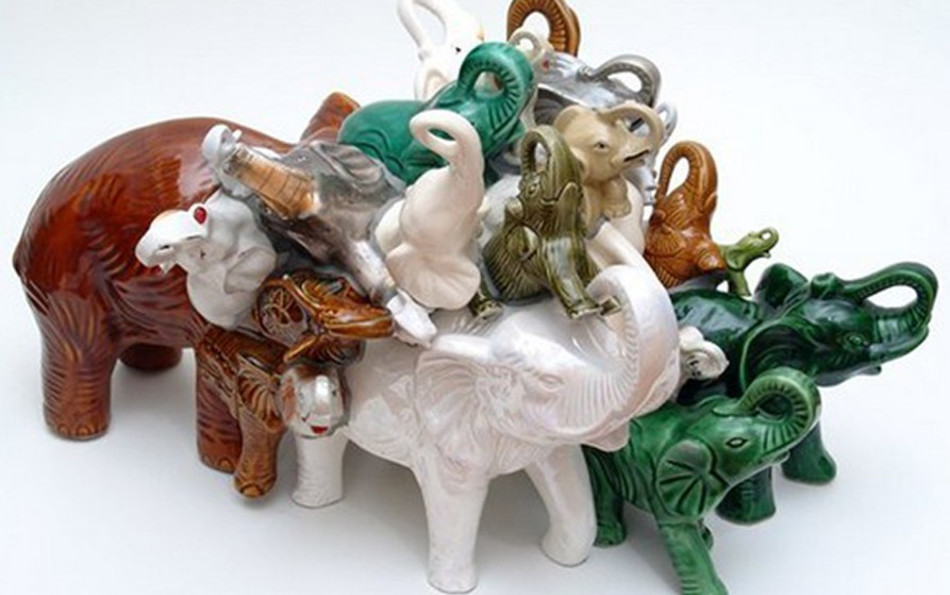
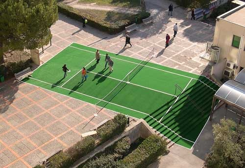

Western Frontier
Suburbia, especially unincorporated territory
Bir Tawil, and conversely, Hala'ib Triangle
The fear of being left behind.
The fear of being a burden.
The fear of an empty future.
A demon — which, spitefully, takes away your ability to write.
A demon that inflicts upon you aphasia.

* Fear of a separation from/lack of family or personal history
* I squeeze into the back seat of a van with four of my cousins. I am in china and it is summer. They ask me many times if i can understand what they are saying, and I say yes, and I can, but they never seem to believe me. Everytime i see them, it is an uphill battle to become close to them again.
* i will never truly know them * and they will never truly know me.
* The huge sort of shadow that my entire family doesn’t know that I’m queer, and that likely my extended family will never know, and also if I did tell them, to me right now it seems like they would never accept or even tolerate that. Part of the reason why I feel this way is because I truly just don’t know them that well. I think only a couple of cousins that I am a little bit closer to would accept it. The anger that I have to ask for acceptance or even tolerance in the first place. The anger that the inevitability of the family unit, and all the anxiety that comes with that, has been ingrained within me.
* I squeeze into the back seat of a van with four of my cousins. I am in china and it is summer. They ask me many times if i can understand what they are saying, and I say yes, and I can, but they never seem to believe me. Everytime i see them, it is an uphill battle to become close to them again.
* i will never truly know them * and they will never truly know me.
* The huge sort of shadow that my entire family doesn’t know that I’m queer, and that likely my extended family will never know, and also if I did tell them, to me right now it seems like they would never accept or even tolerate that. Part of the reason why I feel this way is because I truly just don’t know them that well. I think only a couple of cousins that I am a little bit closer to would accept it. The anger that I have to ask for acceptance or even tolerance in the first place. The anger that the inevitability of the family unit, and all the anxiety that comes with that, has been ingrained within me.
(huge object) Antipodes — The cliche of digging a hole all the way to China
(huge object) Stonehenge (as an object and not a location)
(huge object) The North American continent
(tiny object) Molecular tweezers
(tiny object) Blue marble
(tiny object) A microbead of plastic in the ocean
(supermarket) Kewpie Mayonnaise
(supermarket) Black Vinegar
(supermarket) Cornmeal
(hardware store) Bucket

(hardware store) * Paint chips — names of colors , fun semi-arbitrariness (a memory: a burgundy/maroon color called “alchemy”). (A deep teal called “thermal”)
(hardware store) ROPE
Ambient, glancing, Oblique, meant to be absorbed slowly. Impressionistic
Extremely fast
Fragmented and serialized and indexed, like beads on a string
Collapsing past and future — “digital folk, new medievalism, Neo-western, liquid antiquity”
Like * Autotheory
* “Autotheory” is a term that has emerged to describe contemporary works of literature, art, and art writing that integrate autobiography and other explicitly subjective and embodied modes with discourses of philosophy and theory in ways that transgress genre conventions and disciplinary boundaries. Autotheory is an emergent term, one which began to trend after the publication of Maggie Nelson’s 2015 book The Argonauts, where Nelson, riffing on Paul B. Preciado’s use of the term “auto-theory” in Testo Junkie, inscribed a particularly performative mode of citation alongside a kind of post-memoir, queer feminist life writing text. And yet, autotheory as an impulse can also be traced through earlier feminist performance art, body art, and conceptual art practices, as well as intersectional feminist writings by women of colour like Gloria E. Anzaldúa, Cherríe Moraga, and Audre Lorde. One could argue that the entire history of feminist theory and practice is one of autotheory, though the resonances of “autotheory” as a twenty-first century term bears consideration, particularly when it comes to the twenty-first century context of neoliberalism, late capitalism, and the post-confessional technologies of social media.
* http://www.laurenfournier.net/Autotheory
* “Autotheory” is a term that has emerged to describe contemporary works of literature, art, and art writing that integrate autobiography and other explicitly subjective and embodied modes with discourses of philosophy and theory in ways that transgress genre conventions and disciplinary boundaries. Autotheory is an emergent term, one which began to trend after the publication of Maggie Nelson’s 2015 book The Argonauts, where Nelson, riffing on Paul B. Preciado’s use of the term “auto-theory” in Testo Junkie, inscribed a particularly performative mode of citation alongside a kind of post-memoir, queer feminist life writing text. And yet, autotheory as an impulse can also be traced through earlier feminist performance art, body art, and conceptual art practices, as well as intersectional feminist writings by women of colour like Gloria E. Anzaldúa, Cherríe Moraga, and Audre Lorde. One could argue that the entire history of feminist theory and practice is one of autotheory, though the resonances of “autotheory” as a twenty-first century term bears consideration, particularly when it comes to the twenty-first century context of neoliberalism, late capitalism, and the post-confessional technologies of social media.
* http://www.laurenfournier.net/Autotheory
Juicy
Cascading
Mossy and stony
Elysia Crampton
Oneohtrix Point Never



Carly Rae Jepsen
Charli XCX
Wizard Apprentice — I Am Invisible EP
* “I am invisible/ I am invisible/ I am free from the pressure of being special/ I welcome the potential of being mediocre.”
* “I welcome the likeliness of remaining anonymous/ Many people will never know that I exist.”
* “I am invisible/ I am invisible/ I am free from the pressure of being special/ I welcome the potential of being mediocre.”
* “I welcome the likeliness of remaining anonymous/ Many people will never know that I exist.”
Martine Syms — The Mundane Afrofuturist Manifesto
Igbo Landing
Haitian Revolution
Westward expansion
1492
In the spring of 1948 the entire city of Vanport, Oregon was washed away by flooding.
Get Out
Brokeback Mountain
It Follows
Welcome II the Terrordome (1995)
* https://www.fandor.com/posts/in-the-age-of-trump-welcome-ii-the-terrordome-is-the-dystopia-we-deserve
* https://www.fandor.com/posts/in-the-age-of-trump-welcome-ii-the-terrordome-is-the-dystopia-we-deserve
Timothy Luke
Tracy Ma
FISK Studio
A Small Place — Jamaica Kincaid
Dictee — Theresa Hak Kyung Cha

* http://www.rhizomes.net/issue9/galu.htm
* http://www.rhizomes.net/issue9/galu.htm
Citizen — Claudia Rankine
Don't Let me be Lonely — Claudia Rankine
Don't Let me be Lonely — Claudia Rankine
Maggie Nelson — The Argonauts
* https://lareviewofbooks.org/article/riding-the-blinds/#!
Maggie Nelson — Bluets
* https://lareviewofbooks.org/article/riding-the-blinds/#!
Maggie Nelson — Bluets
Houria Bouteldja — Toward a Politics of Revolutionary Love
Gloria Anzaldua — The borderlands / la frontera: The new Mestiza
* A refusal to be constrained — sexually, linguistically, ontologically — (by binaries — there is no center)
* A refusal to be constrained — sexually, linguistically, ontologically — (by binaries — there is no center)
Ling Ma — Severance
http://websafe2k16.com/about/
* The regimented structure of the internet does not foreclose the possibility for intense introspection and personal narrative, and poetry.
* http://websafe2k16.com/00FFFF
* http://websafe2k16.com/FF3366
* The regimented structure of the internet does not foreclose the possibility for intense introspection and personal narrative, and poetry.
* http://websafe2k16.com/00FFFF
* http://websafe2k16.com/FF3366
https://reallifemag.com
* https://reallifemag.com/colonial-cartography/
* Imperial states used maps as national logos that could be literally removed from the rest of the world and transplanted onto royal seals, letterheads, or decorations, without context. “Wholly detached from its geographic context … pure sign, no longer compass to the world,” Anderson writes. “Instantly recognizable, everywhere visible, the logo-map penetrated deep into the popular imagination.” This was the same imagery that the colonial state’s “local adversaries,” anticolonial nationalists, like the right-wing Hindu fundamentalist movement in India, responding to the British empire, also came to later use in its reactionary idea of nationhood — “as in an ominous prophetic dream,” Anderson writes.
* This practice of mapping assigns physical places with social capital and a social function. Place becomes absorbed into person; it is a function of person, rather than the other way around. Sixteenth-century rulers would hang maps in their palaces to represent the power of the cities they ruled; we, too, integrate our personae with the spaces we occupy, and in some ways own, because we have written these places onto maps. Knowing the actual place becomes irrelevant compared with knowing it in the context of a personal narrative, which requires knowing the place’s social value. We use maps to insert ourselves into spaces, and claim them.
* https://reallifemag.com/colonial-cartography/
* Imperial states used maps as national logos that could be literally removed from the rest of the world and transplanted onto royal seals, letterheads, or decorations, without context. “Wholly detached from its geographic context … pure sign, no longer compass to the world,” Anderson writes. “Instantly recognizable, everywhere visible, the logo-map penetrated deep into the popular imagination.” This was the same imagery that the colonial state’s “local adversaries,” anticolonial nationalists, like the right-wing Hindu fundamentalist movement in India, responding to the British empire, also came to later use in its reactionary idea of nationhood — “as in an ominous prophetic dream,” Anderson writes.
* This practice of mapping assigns physical places with social capital and a social function. Place becomes absorbed into person; it is a function of person, rather than the other way around. Sixteenth-century rulers would hang maps in their palaces to represent the power of the cities they ruled; we, too, integrate our personae with the spaces we occupy, and in some ways own, because we have written these places onto maps. Knowing the actual place becomes irrelevant compared with knowing it in the context of a personal narrative, which requires knowing the place’s social value. We use maps to insert ourselves into spaces, and claim them.
* wanderer, priest, poet, thief
* For her, what mattered the most was to be able to call herself a “woman,” to use the pronouns “she/her.” She didn’t want surgery or hormones; she loved her body and her big dick and didn’t want to change it – she only wanted the word.
* What do I want? Is there a spell that can do that? What font is it in?
Richard Dawson — Peasant
Gazelle Twin — Pastoral
Amnesia Scanner — Another Life
Robyn — Honey
Lily — Psychic Jealousy
Deconstructivism seems like a dead end.
maybe… to say that any instance of imposing order on information is an inherently imperial act.. is a political dead end. So instead what I’ll say is this. im not really sure how much power a graphic designer has. But it’s not nothing. It might be more than we deserve. How are we going to use it?
maybe… to say that any instance of imposing order on information is an inherently imperial act.. is a political dead end. So instead what I’ll say is this. im not really sure how much power a graphic designer has. But it’s not nothing. It might be more than we deserve. How are we going to use it?
Ask me about trauma and I’ll say that I have none.
1. Except for certain moments when it seems like I am looking down at my own body inches away from my own face;
2. A ghost; a specter; a projection; and I am so suddenly aware of
3. your body is a frontier
4. You are the law and yet you have fantasies of lawlesness
5. Some rarified bone
6. Rigid jaw
7. Shattered jaw
8. Horses pounding
9. Clouds of dust
10. Sepia-toned nightmare
11. Perpetual sunset
12. and when you wake up tomorrow, the sun will be setting when night falls the sun will still be setting
13. Carnal attraction
14. virgin waters
15. Unincorporated territory
16. Land with no body, no corporeal form
17. Corona, saga—
18. Western expansion
19. Shirt dampened with sweat
20. low slung jeans
21. The burden of gold
22. making noises wild
23. You believe in telling the stories of others
24. wrapping away the snarling excesses of your own self —
25. wrap it up and bury it
26. like a curse it seeps into the earth
27. nothing hidden inside the husk of dead desert plants
28. greedy for both nostalgia and progress
29. Indistinguishable time (indefinite, non-specific)
30. making your way ever, ever forward
31. life beyond life
32. world beyond world
33. land with no body
34. land for no body
1. Except for certain moments when it seems like I am looking down at my own body inches away from my own face;
2. A ghost; a specter; a projection; and I am so suddenly aware of
3. your body is a frontier
4. You are the law and yet you have fantasies of lawlesness
5. Some rarified bone
6. Rigid jaw
7. Shattered jaw
8. Horses pounding
9. Clouds of dust
10. Sepia-toned nightmare
11. Perpetual sunset
12. and when you wake up tomorrow, the sun will be setting when night falls the sun will still be setting
13. Carnal attraction
14. virgin waters
15. Unincorporated territory
16. Land with no body, no corporeal form
17. Corona, saga—
18. Western expansion
19. Shirt dampened with sweat
20. low slung jeans
21. The burden of gold
22. making noises wild
23. You believe in telling the stories of others
24. wrapping away the snarling excesses of your own self —
25. wrap it up and bury it
26. like a curse it seeps into the earth
27. nothing hidden inside the husk of dead desert plants
28. greedy for both nostalgia and progress
29. Indistinguishable time (indefinite, non-specific)
30. making your way ever, ever forward
31. life beyond life
32. world beyond world
33. land with no body
34. land for no body
It Feels Like Floating
A dull ache — laughter. Miraculous night, silent night, holy night, holy trinity, as I look up into the star-filled sky, forgive me for I have lied. Lied in order to get what I want. Made concessions but not amends. Making split-second decisions and pretending that that was the plan all along. Wanting to seem independent but all actions rely on someone else’s movements.
Words coded in such a way so as to reflect well on the speaker. Words that make you seem smart. Imagine a grotto. Something revealed at low tides when the water rushes back to the sea. Standing in three inches of ice cold water. Drips on your shoulder. A glowing orb. Hidden energy. A casual sign. A cinematic moment. A thin membrane. In front of you is the craggy opening, revealing the midnight ocean gleaming under the light of the full moon. The stars are in perfect alignment with each other. Gleaming.
Foam and detritus wrap around your ankles. Seaweed creeps up your calves. Dragonflies buzz, graze past your ear. A myriad of sighs from last year. Hushed tones. The particular articulations of a French pop star singing in English. Hidden energy. Tidal water, cesspool. Crumbling limestone. If you licked, it would taste salty. Residual particles. Encrusted. Growths.
The true cesspool of hum. A take — sea caves, twinkling but slow. Localized arrhythmia. Constellations … something special about the beach. Grain after grain after grain. Glass beads of time. Moments stringed together, one after another. Pale yellow. Cornflower blue. Peach. Lavender. Beige. Orange. Indigo. Forest green. Red. Amber. Cerulean. Eucalyptus. Cedarwood. Lichen. Algae.
Something to be said about the way it feels — not real — when drifting (in and out, like tides) like in and out of a fever dream. It must feel like how it feels to stop playing a video game. Suddenly everything is rendered inconsequential. Not relevant anymore. But time remains so terrifying to me. The thought one day my bones will be exposed to bare dirt. My skin should sag and reach the ground. Youth. I’m not interested in anything else.
There is no longer a desire to say anything novel. There is only the desire to reiterate old cliches, to dwell in tropes, to relish in trite sentiments. There is nothing to say because nothing ever happens. I vow to abhor world-building in favor of complete self-annihilation. I will always be unresolved, and the feeling of not being will always be—
A dull ache — laughter. Miraculous night, silent night, holy night, holy trinity, as I look up into the star-filled sky, forgive me for I have lied. Lied in order to get what I want. Made concessions but not amends. Making split-second decisions and pretending that that was the plan all along. Wanting to seem independent but all actions rely on someone else’s movements.
Words coded in such a way so as to reflect well on the speaker. Words that make you seem smart. Imagine a grotto. Something revealed at low tides when the water rushes back to the sea. Standing in three inches of ice cold water. Drips on your shoulder. A glowing orb. Hidden energy. A casual sign. A cinematic moment. A thin membrane. In front of you is the craggy opening, revealing the midnight ocean gleaming under the light of the full moon. The stars are in perfect alignment with each other. Gleaming.
Foam and detritus wrap around your ankles. Seaweed creeps up your calves. Dragonflies buzz, graze past your ear. A myriad of sighs from last year. Hushed tones. The particular articulations of a French pop star singing in English. Hidden energy. Tidal water, cesspool. Crumbling limestone. If you licked, it would taste salty. Residual particles. Encrusted. Growths.
The true cesspool of hum. A take — sea caves, twinkling but slow. Localized arrhythmia. Constellations … something special about the beach. Grain after grain after grain. Glass beads of time. Moments stringed together, one after another. Pale yellow. Cornflower blue. Peach. Lavender. Beige. Orange. Indigo. Forest green. Red. Amber. Cerulean. Eucalyptus. Cedarwood. Lichen. Algae.
Something to be said about the way it feels — not real — when drifting (in and out, like tides) like in and out of a fever dream. It must feel like how it feels to stop playing a video game. Suddenly everything is rendered inconsequential. Not relevant anymore. But time remains so terrifying to me. The thought one day my bones will be exposed to bare dirt. My skin should sag and reach the ground. Youth. I’m not interested in anything else.
There is no longer a desire to say anything novel. There is only the desire to reiterate old cliches, to dwell in tropes, to relish in trite sentiments. There is nothing to say because nothing ever happens. I vow to abhor world-building in favor of complete self-annihilation. I will always be unresolved, and the feeling of not being will always be—
Blumaroo
Evergrace Original Soundtrack
For some reason I really like the aesthetic of the promotional materials surround Japanese video games. They're always so much more elegant than the actual aesthetics of the game.
For some reason I really like the aesthetic of the promotional materials surround Japanese video games. They're always so much more elegant than the actual aesthetics of the game.

Hannah Black — Trying to get my hands on her books, "Dark Pool Party" or "Life: a Novel"
Juliana Huxtable — Mucus in my Pineal Gland
Tan Lin — "BlipSoak01" and "7 Controlled Vocabularies and Obituary, The Joy of Cooking 2004"
Etel Adnan — "Sea and Fog"
Jorge Barrão — interested in the kitsch/genre of found ceramics he is working with, as well as the suggestion of multiplicity, plurality, and the over-representation of meaning.
(Over-articulation? Over-signified?)



